Option+アイコンをダブルクリック：表示されているインデックスのパレット全体
（または、範囲選択されている場合にはその選択範囲内）
のカラーを消去します。
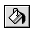 バケツ(塗りつぶし)ツール
- クリック：
- クリックされたポイントと同じパレットコードの連続領域を、パターンで塗りつぶします。
- Option+クリック：
- スポイトツールとして機能します。前景色を設定します。
- Shift+Option+クリック：
- スポイトツールとして機能します。背景色を設定します。
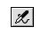 エアブラシツール
- ドラッグ：
- エアブラシ状に、パターンで描画します。
- Option+クリック：
- スポイトツールとして機能します。前景色を設定します。
- Shift+Option+クリック：
- スポイトツールとして機能します。背景色を設定します。
- アイコンをダブルクリック：
- エアブラシスタイルを設定します。
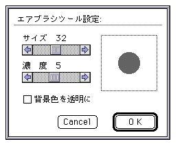
- サイズ：エアブラシのサイズをスクロールバーで指定します。
- 濃度：エアブラシの濃度をスクロールバーで指定します。
- 背景色を透明に：背景色を透明にして描画します。
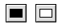 長方形塗りつぶしツール／長方形ツール
- ドラッグ：
- 長方形を、パターンで塗りつぶし・描画します。
- Shift+ドラッグ：
- 正方形を、パターンで塗りつぶし・描画します。
- Option+クリック：
- スポイトツールとして機能します。前景色を設定します。
- Shift+Option+クリック：
- スポイトツールとして機能します。背景色を設定します。
- アイコンをダブルクリック：
- 長方形スタイルを設定します。
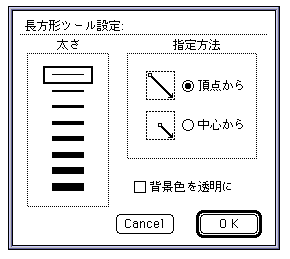
- 太さ： 長方形描画の太さを指定します。この設定は、長方形塗りつぶしツールには影響を与えません。
- 指定方法：描画の指定方法を選択します。
- 頂点から：ドラッグの始点と終点を頂点とした長方形を描画します。
- 中心から：ドラッグの始点を中心に、終点を頂点とした長方形を描画します。
- 背景色を透明に：背景色を透明にして描画します。
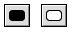 角丸長方形塗りつぶしツール／角丸長方形ツール
- ドラッグ：
- 角丸長方形を、パターンで塗りつぶし・描画します。
- Shift+ドラッグ：
- 角丸正方形を、パターンで塗りつぶし・描画します。
- Option+クリック：
- スポイトツールとして機能します。前景色を設定します。
- Shift+Option+クリック：
- スポイトツールとして機能します。背景色を設定します。
- アイコンをダブルクリック：
- 角丸長方形スタイルを設定します。
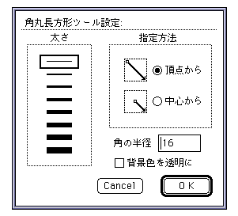
- 太さ： 角丸長方形描画の太さを指定します。この設定は、角丸長方形塗りつぶしツールには影響を与えません。
- 指定方法：描画の指定方法を選択します。
- 頂点から：ドラッグの始点と終点を頂点とした長方形に内接する角丸長方形を描画します。
- 中心から：ドラッグの始点を中心に、終点を頂点とした長方形に内接する角丸長方形を描画します。
- 角の半径：角丸の半径を指定します。
- 背景色を透明に：背景色を透明にして描画します。
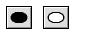 楕円形塗りつぶしツール／楕円形ツール
- ドラッグ：
- 楕円形を、パターンで塗りつぶし・描画します。
- Shift+ドラッグ：
- 正円形を、パターンで塗りつぶし・描画します。
- Option+クリック：
- スポイトツールとして機能します。前景色を設定します。
- Shift+Option+クリック：
- スポイトツールとして機能します。背景色を設定します。
- アイコンをダブルクリック：
- 楕円形スタイルを設定します。
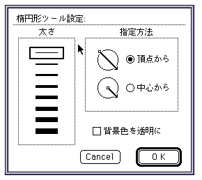
- 太さ：楕円形描画の太さを指定します。この設定は、楕円形塗りつぶしツールには影響を与えません。
- 指定方法：描画の指定方法を選択します。
- 頂点から：ドラッグの始点と終点を頂点とした長方形に内接する楕円形を描画します。
- 中心から：ドラッグの始点を中心に、終点を頂点とした長方形に内接する楕円形を描画します。
- 背景色を透明に：背景色を透明にして描画します。
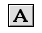 フォントツール
- クリック：
- 文字設定ダイアログを表示し、クリックされたポイントに、指定フォントを、パターンで描画します。
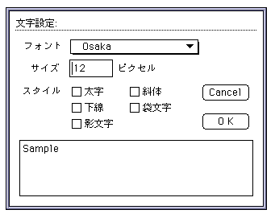
- フォント：フォントの種類をポップアップメニューで指定します。
- サイズ：フォントのサイズを指定します。
- スタイル：フォントのスタイルを指定します。
▲
戻る｜
進む▼
 ★Graphic Tools Guide
★セガペインタユーザーズマニュアル/
★Graphic Tools Guide
★セガペインタユーザーズマニュアル/
Copyright SEGA ENTERPRISES, LTD., 1997
|  スポイトツール
スポイトツール
 +クリック：
+クリック： 消しゴムツール
消しゴムツール